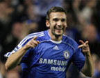
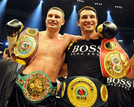
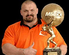
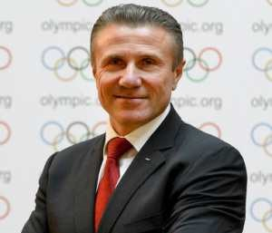
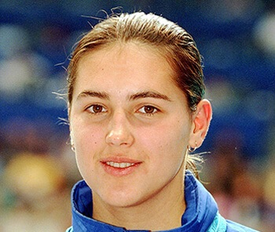

Famous people
In the history of humanity there have always been people whose actions and
ideas produced a great impact on the lives of other people. That‘s why they are called
outstanding.
Ukraine is also abundant in talents. They have made a great contribution to the
scientific, cultural and social life of our country.

Andriy Shevchenko
is a Ukrainian politician, football manager and former professional footballer who played for Dynamo Kyiv, Milan, Chelsea and the Ukraine national team as a striker.

Klitschko brothers
Vitali Klitschko (born 19 July 1971) and Wladimir Klitschko (born 25 March 1976), known as the Klitschko brothers, are Ukrainian former professional boxers.

Vasyl Virastyuk
Vasyl Virastyuk (Василь Вірастюк) is a strongman competitor from Ukraine. He competed in the finals of the World's Strongest Man contest in 2003 (3rd place) and 2004 (1st place). As well he won the 2007 IFSA Strongman World Championship.

Sergey Bubka
is a Ukrainian former pole vaulter. He represented the Soviet Union until its dissolution in 1991. Bubka was twice named Athlete of the Year by Track & Field News,[2] and in 2012 was one of 24 athletes inducted as inaugural members of the International Association of Athletics Federations Hall of Fame.

Yana Klochkova
is a Ukrainian swimmer, who has won five Olympic medals in her career, with four of them being gold. She is Master of Sports, World Class and the only multi gold medal holder (more than two) in Ukraine.